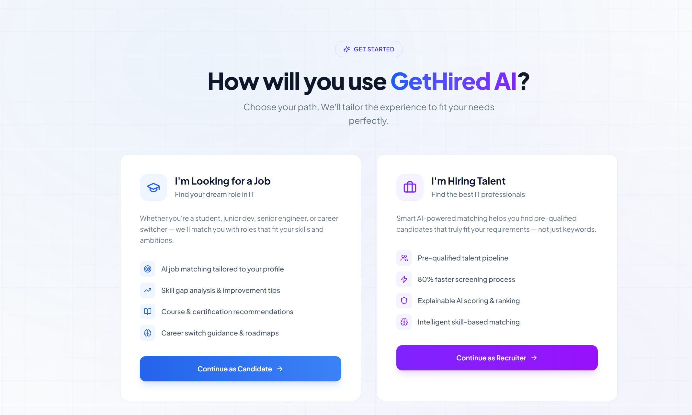
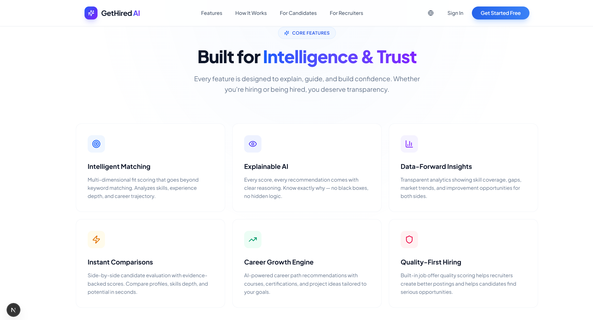
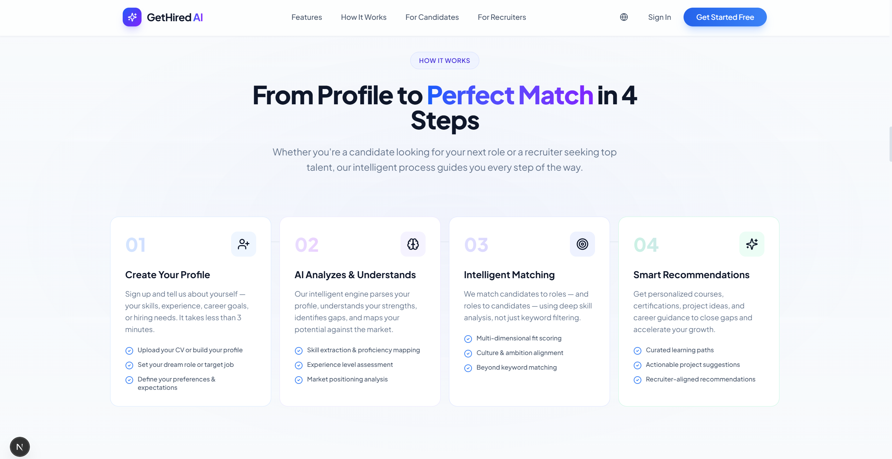
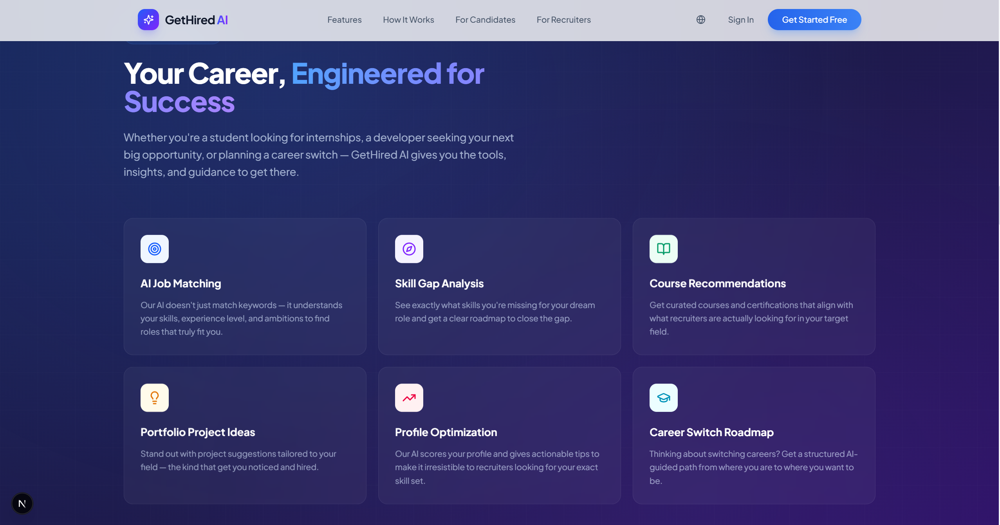

Gallery
Feature snapshots
 Platform overview
Platform overview
Candidate portal
Recruiter dashboard
Fit scoring analysis
Interview and outreachAn AI recruitment platform built to improve matching quality between candidates and recruiters using explainable scoring, CV intelligence, and role-specific automation workflows in English and French.
Applicants struggled to understand why they were rejected and how to improve. Generic feedback and static CV workflows made upskilling and interview readiness inefficient.
CV parsing, semantic extraction, fit scoring, skill-gap detection, and personalized recommendations for certifications and interview preparation.
Automated ranking, profile summarization, interview plan generation, and outreach support based on contextual scoring and role requirements.
Next.js + TypeScript frontend, Spring Boot APIs, JWT auth, Groq LLM orchestration, and multilingual prompt/control flows.
The platform made screening workflows faster and more transparent while giving candidates actionable improvement paths instead of opaque outcomes.
Platform overview
Candidate portal
Recruiter dashboard
Fit scoring analysis
Interview and outreach